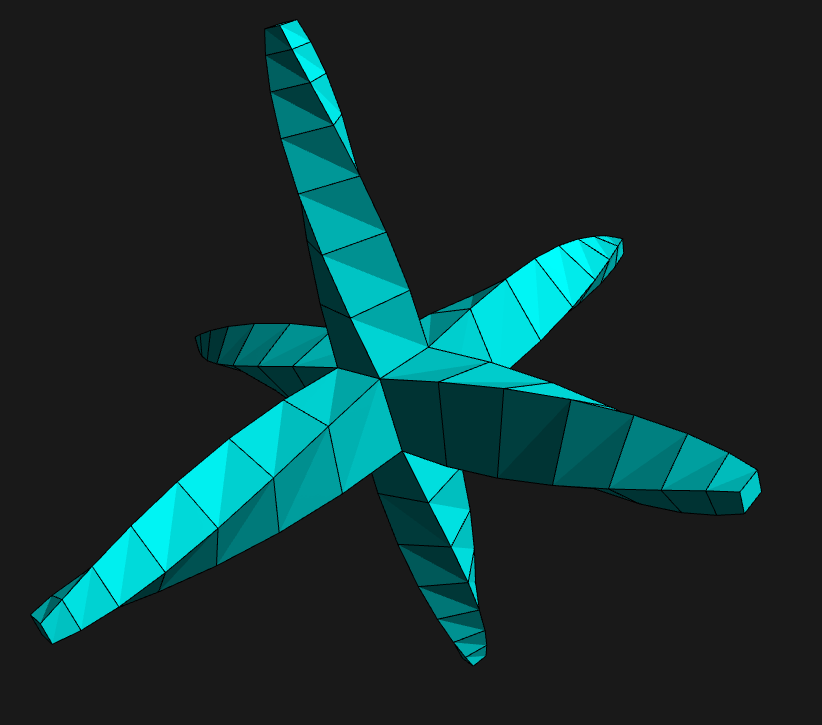
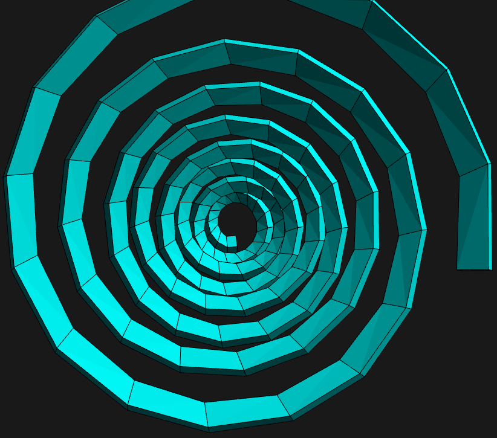
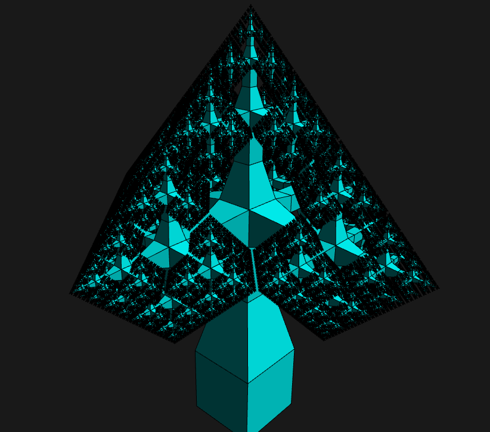

PROJECT REALISED FOR THE GEOMETRY FOR 3D COURSE

Interactive modelling application by faces extrusion
The goal of this project is to develop an interactive modelling application by faces extrusion. To start the modelling, it is possible to generate a cube first. Afterwards, we can perform the following operations:
- Extrude a face
- Reduce and expand a face
- Turn clockwise/counter-clockwise
- Move the face up or down
- Generate a recursive object
- Generate a spiral


